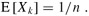

|
|
< Day Day Up > |
|
The general selection problem appears more difficult than the simple problem of finding a minimum. Yet, surprisingly, the asymptotic running time for both problems is the same: Θ(n). In this section, we present a divide-and-conquer algorithm for the selection problem. The algorithm RANDOMIZED-SELECT is modeled after the quicksort algorithm of Chapter 7. As in quicksort, the idea is to partition the input array recursively. But unlike quicksort, which recursively processes both sides of the partition, RANDOMIZED-SELECT only works on one side of the partition. This difference shows up in the analysis: whereas quicksort has an expected running time of Θ(n lg n), the expected time of RANDOMIZED-SELECT is Θ(n).
RANDOMIZED-SELECT uses the procedure RANDOMIZED-PARTITION introduced in Section 7.3. Thus, like RANDOMIZED-QUICKSORT, it is a randomized algorithm, since its behavior is determined in part by the output of a random-number generator. The following code for RANDOMIZED-SELECT returns the ith smallest element of the array A[p .. r].
RANDOMIZED-SELECT(A, p, r, i) 1 if p = r 2 then return A[p] 3 q ← RANDOMIZED-PARTITION(A, p, r) 4 k ← q - p + 1 5 if i = k ▹ the pivot value is the answer 6 then return A[q] 7 elseif i < k 8 then return RANDOMIZED-SELECT(A, p, q - 1, i) 9 else return RANDOMIZED-SELECT(A, q + 1, r, i - k)
After RANDOMIZED-PARTITION is executed in line 3 of the algorithm, the array A[p .. r] is partitioned into two (possibly empty) subarrays A[p .. q - 1] and A[q + 1 .. r] such that each element of A[p .. q - 1] is less than or equal to A[q], which in turn is less than each element of A[q + 1 .. r]. As in quicksort, we will refer to A[q] as the pivot element. Line 4 of RANDOMIZED-SELECT computes the number k of elements in the subarray A[p .. q], that is, the number of elements in the low side of the partition, plus one for the pivot element. Line 5 then checks whether A[q] is the ith smallest element. If it is, then A[q] is returned. Otherwise, the algorithm determines in which of the two subarrays A[p .. q - 1] and A[q + 1 .. r] the ith smallest element lies. If i < k, then the desired element lies on the low side of the partition, and it is recursively selected from the subarray in line 8. If i > k, however, then the desired element lies on the high side of the partition. Since we already know k values that are smaller than the ith smallest element of A[p .. r]-namely, the elements of A[p .. q]-the desired element is the (i - k)th smallest element of A[q + 1 .. r], which is found recursively in line 9. The code appears to allow recursive calls to subarrays with 0 elements, but Exercise 9.2-1 asks you to show that this situation cannot happen.
The worst-case running time for RANDOMIZED-SELECT is Θ(n2), even to find the minimum, because we could be extremely unlucky and always partition around the largest remaining element, and partitioning takes Θ(n) time. The algorithm works well in the average case, though, and because it is randomized, no particular input elicits the worst-case behavior.
The time required by RANDOMIZED-SELECT on an input array A[p .. r] of n elements is a random variable that we denote by T(n), and we obtain an upper bound on E [T(n)] as follows. Procedure RANDOMIZED-PARTITION is equally likely to return any element as the pivot. Therefore, for each k such that 1 ≤ k ≤ n, the subarray A[p .. q] has k elements (all less than or equal to the pivot) with probability 1/n. For k = 1, 2,..., n, we define indicator random variables Xk where
Xk = I{the subarray A[p .. q] has exactly k elements} ,
and so we have
| (9.1) |  |
When we call RANDOMIZED-SELECT and choose A[q] as the pivot element, we do not know, a priori, if we will terminate immediately with the correct answer, recurse on the subarray A[p .. q - 1], or recurse on the subarray A[q + 1 .. r]. This decision depends on where the ith smallest element falls relative to A[q]. Assuming that T(n) is monotonically increasing, we can bound the time needed for the recursive call by the time needed for the recursive call on the largest possible input. In other words, we assume, to obtain an upper bound, that the ith element is always on the side of the partition with the greater number of elements. For a given call of RANDOMIZED-SELECT, the indicator random variable Xk has the value 1 for exactly one value of k, and it is 0 for all other k. When Xk = 1, the two subarrays on which we might recurse have sizes k - 1 and n - k. Hence, we have the recurrence
Taking expected values, we have
In order to apply equation (C.23), we rely on Xk and T(max(k - 1, n - k)) being independent random variables. Exercise 9.2-2 asks you to justify this assertion.
Let us consider the expression max(k - 1, n - k). We have
If n is even, each term from T(⌈n/2⌉) up to T(n - 1) appears exactly twice in the summation, and if n is odd, all these terms appear twice and T(⌊n/2⌋) appears once. Thus, we have
We solve the recurrence by substitution. Assume that T(n) ≤ cn for some constant c that satisfies the initial conditions of the recurrence. We assume that T(n) = O(1) for n less than some constant; we shall pick this constant later. We also pick a constant a such that the function described by the O(n) term above (which describes the non-recursive component of the running time of the algorithm) is bounded from above by an for all n > 0. Using this inductive hypothesis, we have
In order to complete the proof, we need to show that for sufficiently large n, this last expression is at most cn or, equivalently, that cn/4 - c/2 - an ≥ 0. If we add c/2 to both sides and factor out n, we get n(c/4 - a) ≥ c/2. As long as we choose the constant c so that c/4 - a > 0, i.e., c > 4a, we can divide both sides by c/4 - a, giving
Thus, if we assume that T(n) = O(1) for n < 2c/(c -4a), we have T(n) = O(n). We conclude that any order statistic, and in particular the median, can be determined on average in linear time.
|
|
< Day Day Up > |
|